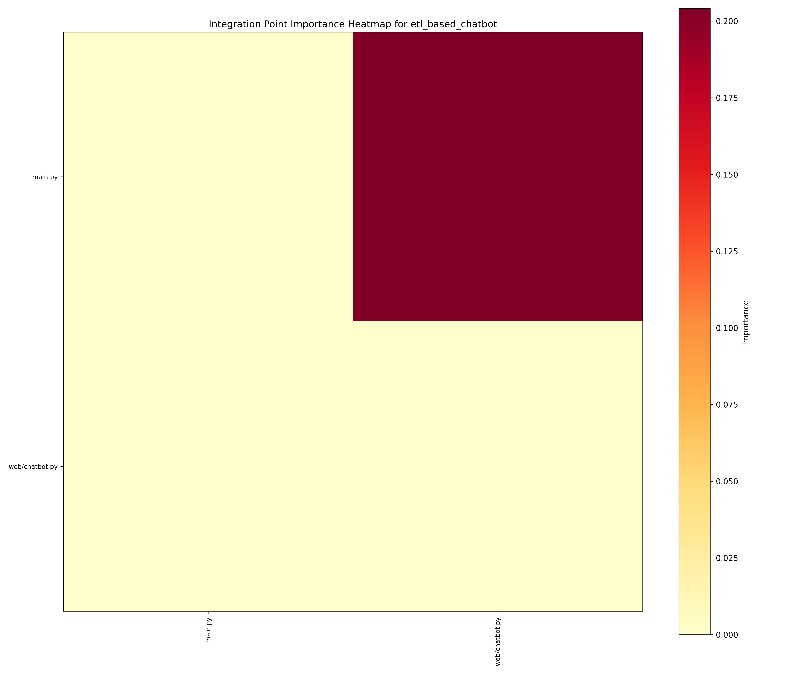
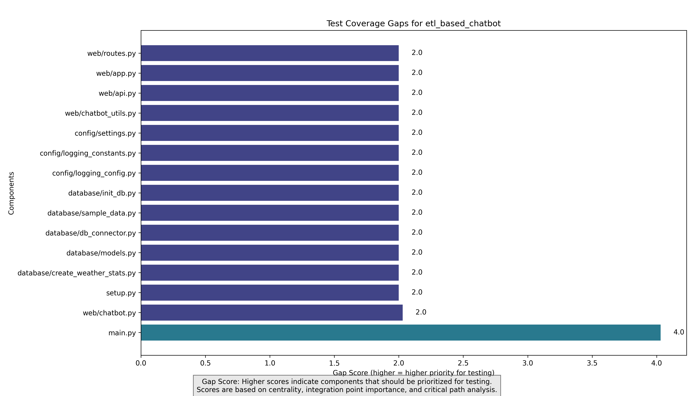

Repository: etl_based_chatbot
Generated on: 2025-04-08 06:31:30
The ETL-based chatbot project is designed to integrate various components including a web interface, database interactions, and an ETL process to facilitate chatbot functionalities. The codebase consists of 50 files primarily written in Python, with a focus on data processing and user interaction.
The architecture is modular, with distinct directories for utilities, tests, chatbot logic, database interactions, web components, ETL processes, configuration, and examples. The main entry point is 'main.py', which interacts heavily with 'web/chatbot.py' for both database and API functionalities.
The following integration points were identified in the codebase:
| Source Component | Target Component | Type | Importance | Explanation |
|---|---|---|---|---|
| main.py | web/chatbot.py | Database | 0.27 | Database access is critical for the chatbot to function correctly, as it relies on data retrieval and storage. |
| main.py | web/chatbot.py | API | 0.24 | API integration is essential for the chatbot to communicate with external services and respond to user queries. |
| main.py | web/chatbot.py | UI | 0.2 | UI component integration ensures that the chatbot interface functions correctly and provides a seamless user experience. |
The following components have the largest test coverage gaps and should be prioritized for testing:
A hybrid testing approach is recommended, combining top-down and bottom-up strategies. This allows for early detection of integration issues while also validating individual components.
The critical path from 'main.py' to 'web/chatbot.py' indicates that any failure in this path could disrupt the entire chatbot functionality. Testing this path thoroughly is essential to ensure reliability.
| Component | Priority | Complexity | Test Types | Rationale |
|---|---|---|---|---|
| main.py | High (4.030612244897959) | 0.3651666666666667 | integration api | Main.py is the entry point and orchestrates interactions between components, making it crucial for integration testing. |
| web/chatbot.py | Medium (2.030612244897959) | 0.2985 | integration ui | This component handles user interactions and data processing, making it essential for testing the chatbot's responsiveness and accuracy. |
| Component | Suggested Approach | Test Data Requirements | Mocking Targets |
|---|---|---|---|
| main.py | Use a combination of mocks for external services and real database connections to validate functionality. | Sample user queries Database records for testing | web/chatbot.py database/db_connector.py |
| web/chatbot.py | Implement end-to-end tests that simulate user interactions and validate responses. | User input scenarios Expected chatbot responses | database/db_connector.py external APIs |
Total estimated effort: 10 person-days (approximately 2.0 weeks).
Focus on creating comprehensive integration tests that cover all critical paths and ensure that both the database and API interactions are thoroughly validated. Utilize mocking for external dependencies to isolate tests.